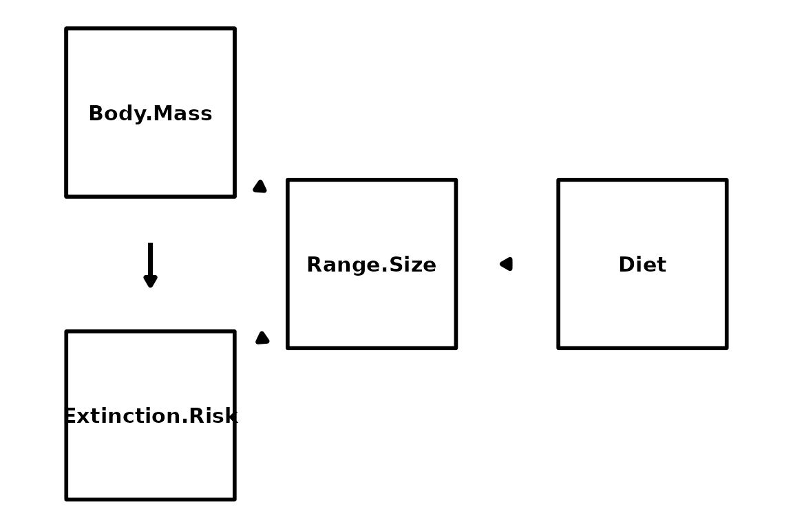
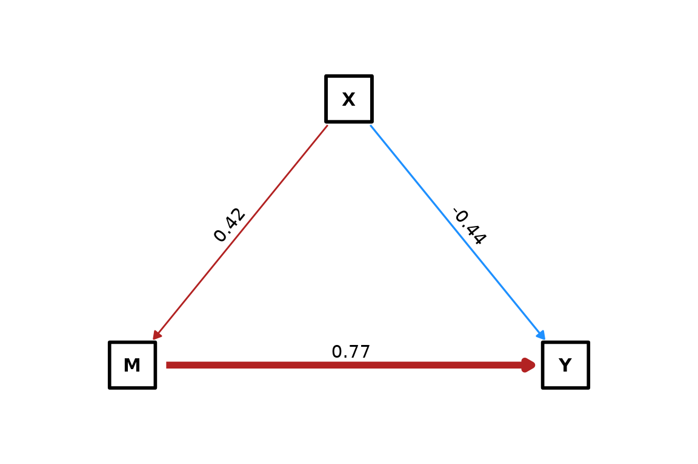
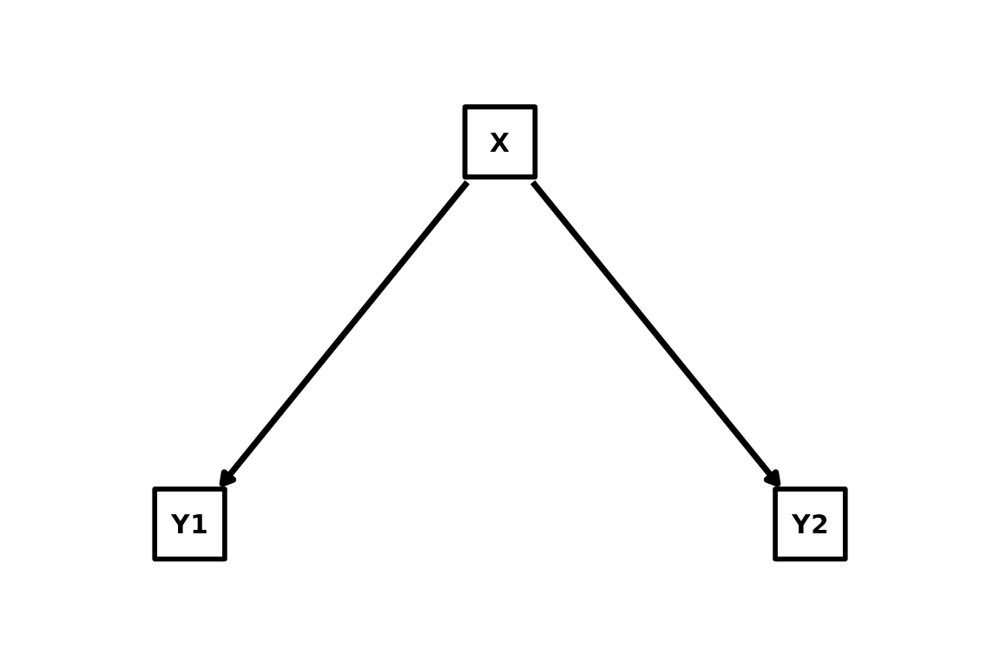
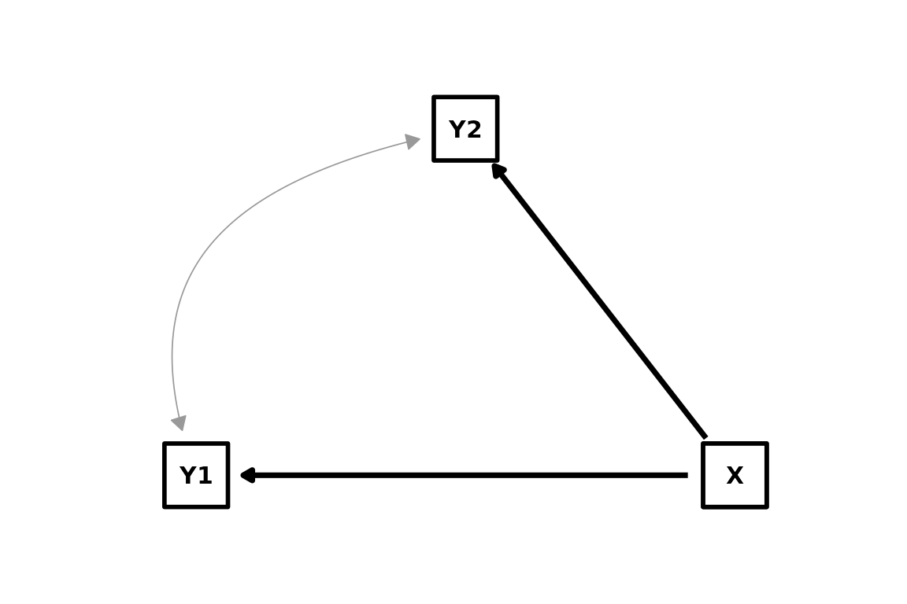
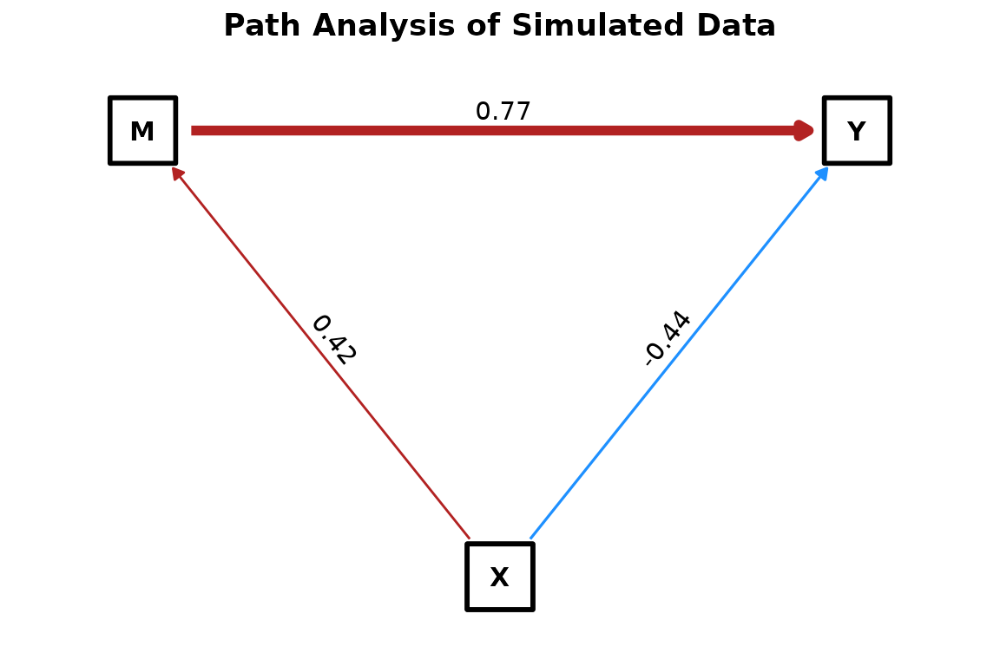
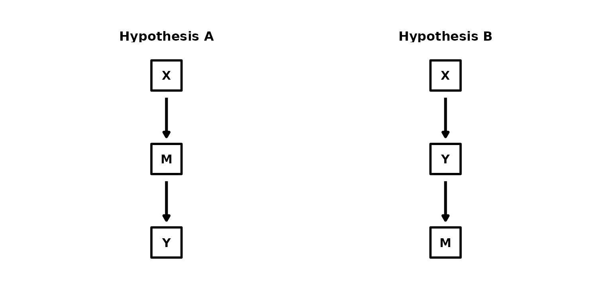

Visualizing Causal Models
05_visualizing_models.RmdThe because package provides a flexible
plot_dag() function to visualize your causal models. Built
on top of ggdag and ggplot2, it generates
publication-ready Directed Acyclic Graphs (DAGs) and Mixed Acyclic
Graphs (MAGs) directly from your model equations or fitted objects.
Setup
First, load the required packages.
library(because)
library(ggplot2)
# Ensure suggested packages are available
if (!requireNamespace("ggdag", quietly = TRUE)) {
message("This vignette requires 'ggdag' and 'ggraph'. Please install them to run the examples.")
knitr::opts_chunk$set(eval = FALSE)
}Basic DAG Plotting
You can visualize a model structure by simply passing a list of equations (formulas). This is useful for checking your logic before fitting a model.
# Define equations
equations <- list(
Range.Size ~ Body.Mass + Diet,
Extinction.Risk ~ Range.Size + Body.Mass
)
# Plot the DAG
plot_dag(equations)
The plot automatically identifies variables: - Squares (■): Observed variables. - Circles (●): Latent variables.
You can manually specify which variables are latent using the
latent argument:
plot_dag(equations, latent = "Diet")
Plotting Fitted Models
When you pass a fitted because object,
plot_dag() extracts extra information: 1. Path
Coefficients: Edge thickness and opacity scale with the
standardized effect size. The path coefficient (Mean of posterior) is
printed on the edge. 2. Latent Variables: Automatically
detected from the model input. 3. Induced Correlations:
Bidirected dashed edges are drawn for variables with modeled residual
covariance (e.g., MAGs).
# Simulate some data for demonstration
set.seed(123)
N <- 100
X <- rnorm(N)
M <- 0.5 * X + rnorm(N)
Y <- 0.7 * M - 0.3 * X + rnorm(N)
df <- data.frame(X, M, Y)
# Fit a quick model
# Fit a quick model
mod <- because(
list(M ~ X, Y ~ M + X),
data = df,
n.iter = 100 # Short run for demo
)
#> No tree provided. Running standard (non-phylogenetic) SEM.
#> Converted data.frame to list with 3 variables: M, X, Y
#> Compiling model graph
#> Resolving undeclared variables
#> Allocating nodes
#> Graph information:
#> Observed stochastic nodes: 200
#> Unobserved stochastic nodes: 7
#> Total graph size: 11015
#>
#> Initializing model
plot_dag(mod)
Notice how the arrow from X to Y
(coefficient approx -0.3) and M to Y (approx
0.7) might differ visually if the effect sizes are distinct.
Visualizing MAGs (Induced Correlations)
If your model includes induced correlations (e.g., using
structure = "mag" or specifying
induced_correlations manually), plot_dag()
visualizes them as dashed, curved, bidirectional arrows.
# Mocking a MAG object for demonstration (or you can fit one)
equations_mag <- list(Y1 ~ X, Y2 ~ X)
induced_cors <- list(c("Y1", "Y2"))
# Plotting by passing explicit arguments (mimics what 'because' does internally)
plot_dag(equations_mag) +
# We simulate what plot_dag does for MAGs by showing a custom structure below:
# (For a real fitted object, this is automatic)
NULL
# Let's verify with an explicit manual check using the helper's logic implies:
# If you have a fitted object with induced_correlations, they appear automatically.
# Here is how you can visualize a theoretical MAG without fitting:
mag_input <- list(
input = list(
equations = list(Y1 ~ X, Y2 ~ X),
induced_correlations = list(c("Y1", "Y2"))
)
)
class(mag_input) <- "because"
plot_dag(mag_input)
Customization
Using Arguments
You can quickly style the nodes using node_color,
node_fill, and node_size.
plot_dag(mod,
node_fill = "lightblue",
node_color = "navy",
node_size = 16,
text_size = 5
)
Using ggplot2 Layers
Since plot_dag() returns a standard ggplot
object, you can add layers, titles, and themes just like any other
plot.
plot_dag(mod) +
ggtitle("Path Analysis of Simulated Data") +
theme_void() + # Remove default background completely
theme(
plot.title = element_text(hjust = 0.5, face = "bold"),
legend.position = "bottom"
)
Comparing Multiple Models (Faceting)
You can plot multiple models side-by-side to compare structures or results. Pass a named list of models or equation lists.
# Compare two alternative structures
eq_A <- list(Y ~ M, M ~ X)
eq_B <- list(Y ~ X, M ~ Y) # Setup with reverse causality
plot_dag(list("Hypothesis A" = eq_A, "Hypothesis B" = eq_B))